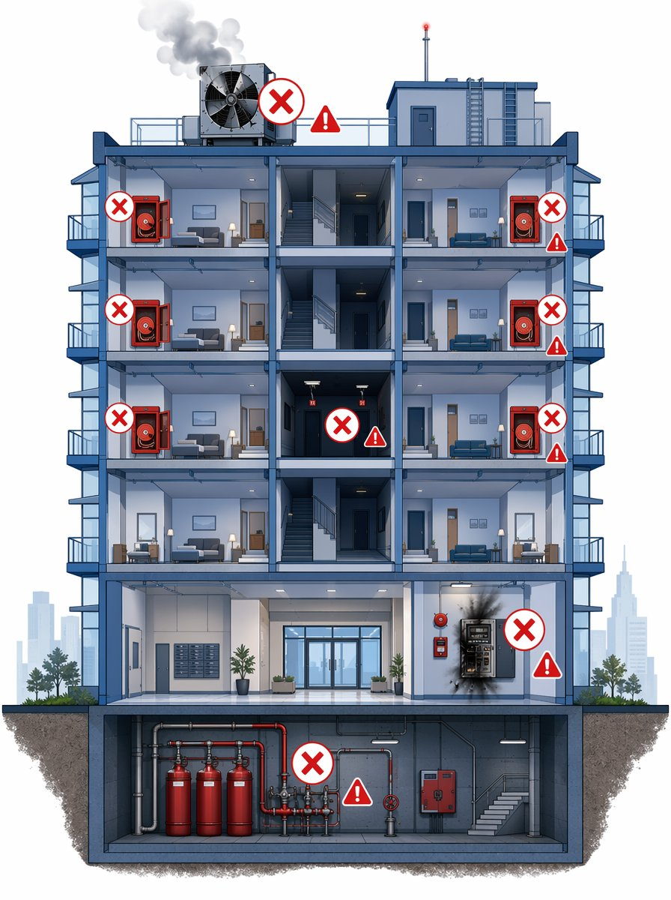
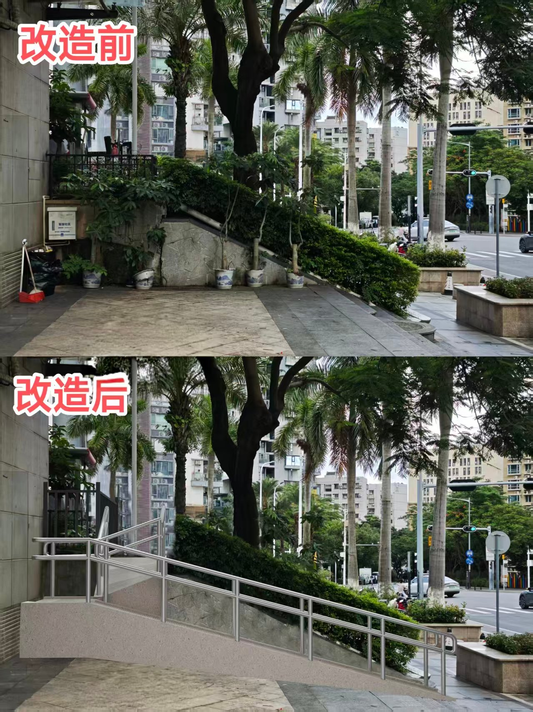

一关于本次大会总体
Q1：这次业主大会有哪些议题？
共10个议题，分四类：
- 工程类（议题一至四）：消防整改、监控系统升级、高空抛物监控、缓坡通道修缮；
- 资金类（议题五）：设立维修资金小额备用金（2.19万）；
- 制度类（议题六至八）：管理规约、议事规则、停车管理办法；
- 其他类（议题九至十）：外来临时车收费标准、纠纷处理诉讼授权。
Q2：十个议题一起表决，我能只投部分议题吗？
可以。每个议题独立表决，您不关心的议题可以投弃权票。但建议您尽量对每个议题都表达意见，因为每个议题的选项都需要达到法定通过门槛才能生效。
二各议题专项问题
（一）消防整改（议题一）
Q3：为什么需要消防整改？
小区的消防系统现在已经基本瘫痪了，不是个别零件坏了，是
五大核心功能全部失效。今年5月专业消防维保公司进场排查，发现的问题触目惊心：
- 火灾报警系统瘫痪：消防主机回路断路、报了132个故障点、主板有黑化烧毁痕迹。意思是——如果着火了，报警系统根本响不了，等闻到烟才发现，小火已经变大火了。
- 消防供水系统失效：2栋天面、5楼、3栋天面消防栓测试全部无水，水泵远程启动打不开，湿式报警阀水力警铃不响。意思是——着火了消火栓里没水，消防员来了也用不了。
- 应急照明和疏散指示大面积损坏：全小区153盏安全出口灯、疏散指示灯、应急照明灯坏了，地下车库、楼梯间、水泵房都不亮。意思是——半夜着火断电后，楼道漆黑一片，老人小孩摸不着出口在哪。
- 防排烟系统故障：4栋天面风机打不开、水泵房风机电机短路跳闸。意思是——火灾产生的浓烟和有毒气体排不出去。高层火灾80%以上的伤亡都是烟气导致的，排烟失效等于致命。
- 气体灭火系统停用：主机已经断电停用、气瓶过期、驱动瓶欠压。意思是——配电室、设备房这些关键区域完全没有灭火保护，一旦起火直接烧毁核心设施，全小区停电停水、消防系统彻底瘫痪。

▲ 图中红叉标注位置 = 消防系统5大故障点
这不是"锦上添花"的改造，是"救命"的紧急整改。消防系统现在等于摆设，万一着火后果不堪设想。
Q4：施工会影响日常生活吗？
施工期间可能会有局部噪音和通道临时调整，物业服务企业会做好施工组织管理，尽量减少对业主生活的影响。具体施工时间安排将在施工前另行通知。
Q5：预算是否合理？
预算按实际工程量测算的最高上限，实际金额以中标方金额为准，最终结算价格以第三方审核为准。中标后的施工单位会向全体业主公示工程改造方案明细和各项费用明细供大家监督。
（二）监控系统升级及高空抛物监控（议题二、议题三）
Q6：现有监控不能用了吗？为什么要换？
咱们小区现有监控系统已经老化严重，存在不少盲区和故障点，清晰度也跟不上现在的安全要求。具体来说：
- 现有摄像头老化，部分已经不清晰或失效，发生纠纷时调出来的画面根本看不清人脸和车牌，出了事查不到人；
- 小区存在监控盲区，一些公共区域和出入口覆盖不到，存在安全死角；
- 高空抛物监控是全新增设的—以前小区没有专门的高空抛物监控，可根据您的意见判断是否需要新增此项工程。
监控系统升级（议题二）解决的是地面公共区域的监控盲区和画质问题，高空抛物监控（议题三）解决的是从下往上拍的仰拍监控。
两个系统覆盖范围完全不同，所以分两个议题。
Q7：高空抛物监控会不会侵犯隐私？
高空抛物监控的安装位置和角度经过设计，主要针对建筑外立面，不会拍摄业主室内场景。
Q8：两个监控能不能合并采购省点钱？
两个监控系统工程范围、技术要求和施工单位不同，已分别编制预算。
（三）缓坡通道修缮（议题四）
Q9：什么是缓坡通道？给谁用的？
缓坡通道是为
出行不便的群体（如携带大件行李箱、推婴儿车的业主、上楼梯不便的群体等）设置的通行通道，通过保安岗亭侧面空间拓展折叠下行通道缓释整体高度。修缮方案
不破坏现有大门楼梯结构。

▲ 上图：改造前（仅有台阶） 下图：改造后（增设缓坡通道）
（四）维修资金备用金（议题五）
Q10：什么是维修资金备用金？
小额备用金是从日常收取的物业专项维修资金中提取的一部分，用于物业共用设施设备、共用部位的小额维修（不含根据物业合同约定应由物业公司负责维修的部分）。设立备用金是为了提升小额维修的处置效率，出现问题可以快速响应快速维修，避免每次小额维修都要召开业主大会表决，拉长整个周期带来不必要的麻烦。
Q11：小额备用金谁来管？
备用金每笔开支由全体业主授权业主委员会审核确认。备用金使用按维修所涉业主专有部分建筑面积分摊。备用金使用完后，由业委会根据小区实际情况综合判断是否再次申请，年度累计总额不得超过本年度实际收取日常维修金额总额。
Q12：小额备用金会不会被滥用？
备用金额度仅为
2.19万元（不超过日常维修资金年度应收总额的30%），物业服务企业使用的每笔开支需向业委会审核确认，且年度累计有上限。业主可随时向业委会查询备用金使用情况。
（五）停车管理办法（议题八）
Q13：停车管理办法改了什么？
主要修订内容包括违停管理办法、车辆进出管理、电动自行车管理、月卡车辆排号规范等。具体内容请查阅附件7全文。
（六）外来临时车收费标准（议题九）
Q14：外来车收费有三个方案，有什么区别？
三个方案的设计思路不同：
方案1：分时段计价
白天不变，夜间涨价。保障白天来访亲友的车辆价格在合理范围，同时避免因为半山御景在周边小区处于停车价格洼地而引入大量外来车。
Q15：外来车收费涨了会不会影响业主亲友来访？
外来临时车收费针对的是非小区住户的外来车辆。业主和租户以及家属自有车辆按月卡或业主临时停车标准收费，不受外来车收费标准影响。如有亲友来访需临时停车，费用由来访车辆承担。
（七）纠纷处理诉讼授权（议题十）
Q16：这个议题是什么意思？跟谁打官司？
授权条款不意味着一定会诉讼，而是提前做好准备。本议题是授权业主委员会代表业主大会，就侵害业主共同权益的行为依法提起诉讼或仲裁。可能涉及的纠纷包括物业服务合同纠纷、小区共有配套设施权属纠纷、共有部分收益权纠纷等。诉讼产生的律师费、诉讼费等从业主共有资金中列支。
Q17：授权业委会诉讼会不会有风险？
业委会代表业主大会诉讼是法律明确赋予的权利（《民法典》第286条、第287条）。诉讼事项限于侵害业主共同权益的行为，费用从共有资金列支，业主可随时了解诉讼进展。
三关于投票流程
Q18：怎么投票？
本次采取
电子投票和纸质投票相结合的方式，两种方式具有同等法律效力。
- 电子投票：关注"深圳市住房和建设局"微信公众号（微信号：szzfjsj），路径为"业务办理－物业－物业服务－业主决策－参与投票"，投票时间为2026年8月9日0:00至8月23日23:59，全天24小时可投。
- 纸质投票：投票期间的周末及工作日9:00至12:00、14:00至18:00，到物业服务中心投票。需携带房产证（或房屋买卖合同）、身份证原件。纸质票需填写房号、业主签名及身份证号。
Q19：微信上找不到投票入口怎么办？
请确认您关注的是"深圳市住房和建设局"官方公众号（微信号：szzfjsj），不是其他类似名称的公众号。路径为"业务办理－物业－物业服务－业主决策－参与投票"。如果仍找不到，可能是您的房产信息未在系统中登记。
Q20：如果既投了电子票又投了纸质票怎么办？
以电子投票结果为准。
Q21：投票结果什么时候出来？
开箱验票时间为2026年8月24日8:45。投票结果统计完成后3日内，业委会公示业主大会表决结果。
Q22：如果某个议题没通过怎么办？
未达到法定通过门槛的议题，表决结果为不通过，该议题对应的方案不会实施。业委会可根据情况修改方案后再次提交业主大会表决。
Q23：我不是业主，是租户，能投票吗？
投票权属于业主。租户不能直接投票，但可以接受业主委托代为投票，需提供业主签署的委托书及相关证件。
Q24：房产证上是夫妻两个人的名字，谁投票？
一个独立产权单位登记有两个或两个以上所有权人的，应自行推选一名投票人进行投票。